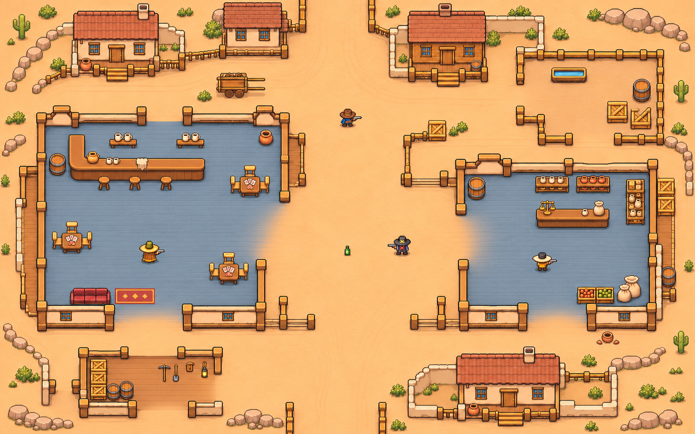
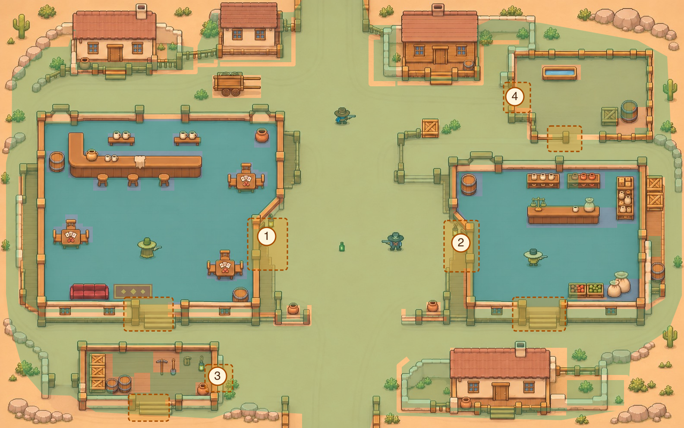

Tequila Kill · Concepts du 25 novembre 2026
Rues, place et intérieurs plus vastes à l’échelle des quatre personnages. Décor moins contrasté, dégradés doux conservés. Maquette artistique : les effets, le déplacement et la caméra à quatre restent à examiner dans le moteur.
Études du 24 novembre · Inventaire et décisions
09 · Base retenue : passages ouverts et fondu
Le producteur retient la première image09, avec fondu entre les sols, comme base pour la suite. La variante aux raccords nets reste conservée ci-dessous.

Prompt imagegen · Choix du producteur
08 · Annotation de la version 07 : sols proposés et seuils à revoir
Vert transparent : sols interprétés comme praticables. Orange : accès à ouvrir ou élargir. Sans couleur : obstacles ou surfaces non retenues. Cette annotation ne représente pas les collisions actuelles du moteur.

Annotation vectorielle · Géométrie proposée
06 · Étape précédente pour comparaison